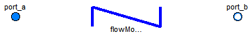

Extends from Modelica.Icons.VariantsPackage (Icon for package containing variants).
| Name | Description |
|---|---|
| StaticPipe | Basic pipe flow model without storage of mass or energy |
| DynamicPipe | Dynamic pipe model with storage of mass and energy |
| Base classes used in the Pipes package (only of interest to build new component models) |
 Modelica.Fluid.Pipes.StaticPipe
Modelica.Fluid.Pipes.StaticPipe
Model of a straight pipe with constant cross section and with steady-state mass, momentum and energy balances, i.e., the model does not store mass or energy. There exist two thermodynamic states, one at each fluid port. The momentum balance is formulated for the two states, taking into account momentum flows, friction and gravity. The same result can be obtained by using DynamicPipe with steady-state dynamic settings. The intended use is to provide simple connections of vessels or other devices with storage, as it is done in:
Extends from Modelica.Fluid.Pipes.BaseClasses.PartialStraightPipe (Base class for straight pipe models).
| Type | Name | Default | Description |
|---|---|---|---|
| replaceable package Medium | PartialMedium | Medium in the component | |
| Geometry | |||
| Real | nParallel | 1 | Number of identical parallel pipes |
| Length | length | Length [m] | |
| Boolean | isCircular | true | = true if cross sectional area is circular |
| Diameter | diameter | Diameter of circular pipe [m] | |
| Area | crossArea | Modelica.Constants.pi*diamet... | Inner cross section area [m2] |
| Length | perimeter | Modelica.Constants.pi*diameter | Inner perimeter [m] |
| Height | roughness | 2.5e-5 | Average height of surface asperities (default: smooth steel pipe) [m] |
| Static head | |||
| Length | height_ab | 0 | Height(port_b) - Height(port_a) [m] |
| Pressure loss | |||
| replaceable model FlowModel | DetailedPipeFlow | Wall friction, gravity, momentum flow | |
| Assumptions | |||
| Boolean | allowFlowReversal | system.allowFlowReversal | = true to allow flow reversal, false restricts to design direction (port_a -> port_b) |
| Initialization | |||
| AbsolutePressure | p_a_start | system.p_start | Start value of pressure at port a [Pa] |
| AbsolutePressure | p_b_start | p_a_start | Start value of pressure at port b [Pa] |
| MassFlowRate | m_flow_start | system.m_flow_start | Start value for mass flow rate [kg/s] |
| Type | Name | Description |
|---|---|---|
| FluidPort_a | port_a | Fluid connector a (positive design flow direction is from port_a to port_b) |
| FluidPort_b | port_b | Fluid connector b (positive design flow direction is from port_a to port_b) |
model StaticPipe
"Basic pipe flow model without storage of mass or energy"
// extending PartialStraightPipe
extends Modelica.Fluid.Pipes.BaseClasses.PartialStraightPipe;
// Initialization
parameter Medium.AbsolutePressure p_a_start=system.p_start
"Start value of pressure at port a";
parameter Medium.AbsolutePressure p_b_start=p_a_start
"Start value of pressure at port b";
parameter Medium.MassFlowRate m_flow_start = system.m_flow_start
"Start value for mass flow rate";
FlowModel flowModel(
redeclare final package Medium = Medium,
final n=2,
states={Medium.setState_phX(port_a.p, inStream(port_a.h_outflow), inStream(port_a.Xi_outflow)),
Medium.setState_phX(port_b.p, inStream(port_b.h_outflow), inStream(port_b.Xi_outflow))},
vs={port_a.m_flow/Medium.density(flowModel.states[1])/flowModel.crossAreas[1],
-port_b.m_flow/Medium.density(flowModel.states[2])/flowModel.crossAreas[2]}/nParallel,
final momentumDynamics=Types.Dynamics.SteadyState,
final allowFlowReversal=allowFlowReversal,
final p_a_start=p_a_start,
final p_b_start=p_b_start,
final m_flow_start=m_flow_start,
final nParallel=nParallel,
final pathLengths={length},
final crossAreas={crossArea, crossArea},
final dimensions={4*crossArea/perimeter, 4*crossArea/perimeter},
final roughnesses={roughness, roughness},
final dheights={height_ab},
final g=system.g) "Flow model";
equation
// Mass balance
port_a.m_flow = flowModel.m_flows[1];
0 = port_a.m_flow + port_b.m_flow;
port_a.Xi_outflow = inStream(port_b.Xi_outflow);
port_b.Xi_outflow = inStream(port_a.Xi_outflow);
port_a.C_outflow = inStream(port_b.C_outflow);
port_b.C_outflow = inStream(port_a.C_outflow);
// Energy balance, considering change of potential energy
// Wb_flow = v*A*dpdx + v*F_fric
// = m_flow/d/A * (A*dpdx + A*pressureLoss.dp_fg - F_grav)
// = m_flow/d/A * (-A*g*height_ab*d)
// = -m_flow*g*height_ab
port_b.h_outflow = inStream(port_a.h_outflow) - system.g*height_ab;
port_a.h_outflow = inStream(port_b.h_outflow) + system.g*height_ab;
end StaticPipe;
 Modelica.Fluid.Pipes.DynamicPipe
Modelica.Fluid.Pipes.DynamicPipe

Model of a straight pipe with distributed mass, energy and momentum balances. It provides the complete balance equations for one-dimensional fluid flow as formulated in UsersGuide.ComponentDefinition.BalanceEquations.
The partial differential equations are treated with the finite volume method and a staggered grid scheme for momentum balances. The pipe is split into nNodes equally spaced segments along the flow path. The default value is nNodes=2. This results in two lumped mass and energy balances and one lumped momentum balance across the dynamic pipe.
Note that this generally leads to high-index DAEs for pressure states if dynamic pipes are directly connected to each other,
or generally to models with storage exposing a thermodynamic state through the port. This may not be valid
if the dynamic pipe is connected to a model with non-differentiable pressure, like a Sources.Boundary_pT with prescribed jumping pressure.
The modelStructure can be configured as appropriate in such situations,
in order to place a momentum balance between a pressure state of the pipe and a non-differentiable boundary condition.
The default modelStructure is av_vb (see Advanced tab).
The simplest possible alternative symetric configuration, avoiding potential high-index DAEs at the cost of the potential introduction
of nonlinear equation systems, is obtained with the setting nNodes=1, modelStructure=a_v_b.
Depending on the configured model structure, the first and the last pipe segment,
or the flow path length of the first and the last momentum balance, are of half size.
See the documentation of the base class
Pipes.BaseClasses.PartialTwoPortFlow,
also covering asymmetric configurations.
The HeatTransfer component specifies the source term Qb_flows of the energy balance.
The default component uses a constant coefficient for the heat transfer between the bulk flow and the segment boundaries exposed through the heatPorts.
The HeatTransfer model is replaceable and can be exchanged with any model extended from
BaseClasses.HeatTransfer.PartialFlowHeatTransfer.
The intended use is for complex networks of pipes and other flow devices, like valves. See e.g.
Extends from Modelica.Fluid.Pipes.BaseClasses.PartialStraightPipe (Base class for straight pipe models), BaseClasses.PartialTwoPortFlow (Base class for distributed flow models).
| Type | Name | Default | Description |
|---|---|---|---|
| replaceable package Medium | PartialMedium | Medium in the component | |
| Geometry | |||
| Real | nParallel | 1 | Number of identical parallel pipes |
| Length | length | Length [m] | |
| Boolean | isCircular | true | = true if cross sectional area is circular |
| Diameter | diameter | Diameter of circular pipe [m] | |
| Area | crossArea | Modelica.Constants.pi*diamet... | Inner cross section area [m2] |
| Length | perimeter | Modelica.Constants.pi*diameter | Inner perimeter [m] |
| Height | roughness | 2.5e-5 | Average height of surface asperities (default: smooth steel pipe) [m] |
| Length | lengths[n] | if n == 1 then {length} else... | lengths of flow segments [m] |
| Area | crossAreas[n] | fill(crossArea, n) | cross flow areas of flow segments [m2] |
| Length | dimensions[n] | fill(4*crossArea/perimeter, n) | hydraulic diameters of flow segments [m] |
| Height | roughnesses[n] | fill(roughness, n) | Average heights of surface asperities [m] |
| Static head | |||
| Length | height_ab | 0 | Height(port_b) - Height(port_a) [m] |
| Length | dheights[n] | height_ab*dxs | Differences in heigths of flow segments [m] |
| Pressure loss | |||
| replaceable model FlowModel | DetailedPipeFlow | Wall friction, gravity, momentum flow | |
| Assumptions | |||
| Boolean | allowFlowReversal | system.allowFlowReversal | = true to allow flow reversal, false restricts to design direction (port_a -> port_b) |
| Dynamics | |||
| Dynamics | energyDynamics | system.energyDynamics | Formulation of energy balances |
| Dynamics | massDynamics | system.massDynamics | Formulation of mass balances |
| Dynamics | momentumDynamics | system.momentumDynamics | Formulation of momentum balances |
| Heat transfer | |||
| Boolean | use_HeatTransfer | false | = true to use the HeatTransfer model |
| Initialization | |||
| AbsolutePressure | p_a_start | system.p_start | Start value of pressure at port a [Pa] |
| AbsolutePressure | p_b_start | p_a_start | Start value of pressure at port b [Pa] |
| Boolean | use_T_start | true | Use T_start if true, otherwise h_start |
| Temperature | T_start | if use_T_start then system.T... | Start value of temperature [K] |
| SpecificEnthalpy | h_start | if use_T_start then Medium.s... | Start value of specific enthalpy [J/kg] |
| MassFraction | X_start[Medium.nX] | Medium.X_default | Start value of mass fractions m_i/m [kg/kg] |
| ExtraProperty | C_start[Medium.nC] | fill(0, Medium.nC) | Start value of trace substances |
| MassFlowRate | m_flow_start | system.m_flow_start | Start value for mass flow rate [kg/s] |
| Advanced | |||
| Integer | nNodes | 2 | Number of discrete flow volumes |
| ModelStructure | modelStructure | Types.ModelStructure.av_vb | Determines whether flow or volume models are present at the ports |
| Boolean | useLumpedPressure | false | =true to lump pressure states together |
| Boolean | useInnerPortProperties | false | =true to take port properties for flow models from internal control volumes |
| Type | Name | Description |
|---|---|---|
| FluidPort_a | port_a | Fluid connector a (positive design flow direction is from port_a to port_b) |
| FluidPort_b | port_b | Fluid connector b (positive design flow direction is from port_a to port_b) |
| HeatPorts_a | heatPorts[nNodes] |
model DynamicPipe
"Dynamic pipe model with storage of mass and energy"
import Modelica.Fluid.Types.ModelStructure;
// extending PartialStraightPipe
extends Modelica.Fluid.Pipes.BaseClasses.PartialStraightPipe(
final port_a_exposesState = (modelStructure == ModelStructure.av_b) or (modelStructure == ModelStructure.av_vb),
final port_b_exposesState = (modelStructure == ModelStructure.a_vb) or (modelStructure == ModelStructure.av_vb));
// extending PartialTwoPortFlow
extends BaseClasses.PartialTwoPortFlow(
final lengths=if n == 1 then
{length} else
if modelStructure == ModelStructure.av_vb then
cat(1, {length/(n-1)/2}, fill(length/(n-1), n-2), {length/(n-1)/2}) else
if modelStructure == ModelStructure.av_b then
cat(1, {length/n/2}, fill(length*(1-1/n/2)/(n-1), n-1)) else
if modelStructure == ModelStructure.a_vb then
cat(1, fill(length*(1-1/n/2)/(n-1), n-1), {length/n/2}) else
fill(length/n, n),
final crossAreas=fill(crossArea, n),
final dimensions=fill(4*crossArea/perimeter, n),
final roughnesses=fill(roughness, n),
final dheights=height_ab*dxs);
// Wall heat transfer
parameter Boolean use_HeatTransfer = false
"= true to use the HeatTransfer model";
replaceable model HeatTransfer =
Modelica.Fluid.Pipes.BaseClasses.HeatTransfer.IdealFlowHeatTransfer
constrainedby
Modelica.Fluid.Pipes.BaseClasses.HeatTransfer.PartialFlowHeatTransfer
"Wall heat transfer";
Interfaces.HeatPorts_a[nNodes] heatPorts if use_HeatTransfer;
HeatTransfer heatTransfer(
redeclare each final package Medium = Medium,
final n=n,
final nParallel=nParallel,
final surfaceAreas=perimeter*lengths,
final lengths=lengths,
final dimensions=dimensions,
final roughnesses=roughnesses,
final states=mediums.state,
final vs = vs,
final use_k = use_HeatTransfer) "Heat transfer model";
final parameter Real[n] dxs = lengths/sum(lengths);
equation
Qb_flows = heatTransfer.Q_flows;
// Wb_flow = v*A*dpdx + v*F_fric
// = v*A*dpdx + v*A*flowModel.dp_fg - v*A*dp_grav
if n == 1 or useLumpedPressure then
Wb_flows = dxs * ((vs*dxs)*(crossAreas*dxs)*((port_b.p - port_a.p) + sum(flowModel.dps_fg) - system.g*(dheights*mediums.d)))*nParallel;
else
if modelStructure == ModelStructure.av_vb or modelStructure == ModelStructure.av_b then
Wb_flows[2:n-1] = {vs[i]*crossAreas[i]*((mediums[i+1].p - mediums[i-1].p)/2 + (flowModel.dps_fg[i-1]+flowModel.dps_fg[i])/2 - system.g*dheights[i]*mediums[i].d) for i in 2:n-1}*nParallel;
else
Wb_flows[2:n-1] = {vs[i]*crossAreas[i]*((mediums[i+1].p - mediums[i-1].p)/2 + (flowModel.dps_fg[i]+flowModel.dps_fg[i+1])/2 - system.g*dheights[i]*mediums[i].d) for i in 2:n-1}*nParallel;
end if;
if modelStructure == ModelStructure.av_vb then
Wb_flows[1] = vs[1]*crossAreas[1]*((mediums[2].p - mediums[1].p)/2 + flowModel.dps_fg[1]/2 - system.g*dheights[1]*mediums[1].d)*nParallel;
Wb_flows[n] = vs[n]*crossAreas[n]*((mediums[n].p - mediums[n-1].p)/2 + flowModel.dps_fg[n-1]/2 - system.g*dheights[n]*mediums[n].d)*nParallel;
elseif modelStructure == ModelStructure.av_b then
Wb_flows[1] = vs[1]*crossAreas[1]*((mediums[2].p - mediums[1].p)/2 + flowModel.dps_fg[1]/2 - system.g*dheights[1]*mediums[1].d)*nParallel;
Wb_flows[n] = vs[n]*crossAreas[n]*((port_b.p - mediums[n-1].p)/1.5 + flowModel.dps_fg[n-1]/2+flowModel.dps_fg[n] - system.g*dheights[n]*mediums[n].d)*nParallel;
elseif modelStructure == ModelStructure.a_vb then
Wb_flows[1] = vs[1]*crossAreas[1]*((mediums[2].p - port_a.p)/1.5 + flowModel.dps_fg[1]+flowModel.dps_fg[2]/2 - system.g*dheights[1]*mediums[1].d)*nParallel;
Wb_flows[n] = vs[n]*crossAreas[n]*((mediums[n].p - mediums[n-1].p)/2 + flowModel.dps_fg[n]/2 - system.g*dheights[n]*mediums[n].d)*nParallel;
elseif modelStructure == ModelStructure.a_v_b then
Wb_flows[1] = vs[1]*crossAreas[1]*((mediums[2].p - port_a.p)/1.5 + flowModel.dps_fg[1]+flowModel.dps_fg[2]/2 - system.g*dheights[1]*mediums[1].d)*nParallel;
Wb_flows[n] = vs[n]*crossAreas[n]*((port_b.p - mediums[n-1].p)/1.5 + flowModel.dps_fg[n]/2+flowModel.dps_fg[n+1] - system.g*dheights[n]*mediums[n].d)*nParallel;
else
assert(true, "Unknown model structure");
end if;
end if;
connect(heatPorts, heatTransfer.heatPorts);
end DynamicPipe;
 Modelica.Fluid.Pipes.DynamicPipe.HeatTransfer
Modelica.Fluid.Pipes.DynamicPipe.HeatTransfer

| Type | Name | Default | Description |
|---|---|---|---|
| Ambient | |||
| CoefficientOfHeatTransfer | k | 0 | Heat transfer coefficient to ambient [W/(m2.K)] |
| Temperature | T_ambient | system.T_ambient | Ambient temperature [K] |
| Internal Interface | |||
| replaceable package Medium | PartialMedium | Medium in the component | |
| Integer | n | 1 | Number of heat transfer segments |
| Boolean | use_k | false | = true to use k value for thermal isolation |
| Geometry | |||
| Real | nParallel | number of identical parallel flow devices | |
| Type | Name | Description |
|---|---|---|
| HeatPorts_a | heatPorts[n] | Heat port to component boundary |
replaceable model HeatTransfer =
Modelica.Fluid.Pipes.BaseClasses.HeatTransfer.IdealFlowHeatTransfer
constrainedby
Modelica.Fluid.Pipes.BaseClasses.HeatTransfer.PartialFlowHeatTransfer
"Wall heat transfer";